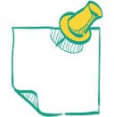

-
Консалтингова компанія «Law Decision» пропонує юридичні і бухгалтерські послуги для фізичних та юридичних осіб. Професійний підхід до законодавства - це перший крок до позитивного вирішення питання.
Кваліфікована допомога при укладенні, аналізі або розірвання договорів з партнерами на сьогоднішній день є необхідністю. Такий підхід буде стимулювати Ваших партнерів до виконання взятих на себе зобов'язань, і допоможе відстояти Ваші інтереси при судовому розгляді.
Слід пам'ятати, що документи, відповідні нормам закону - це гарант Вашої успішної діяльності та надійного захисту своїх прав та інтересів.
Вартість послуг...
- Юридичний супровід
-
Правове забезпечення діяльності - це не тільки дотримання норм законодавства при наданні послуг або продажу товарів, а й документальне відображення результатів.
В рамках юридичного супроводу ми пропонуємо:
-Постійний моніторинг діяльності підприємства на відповідність чинному законодавству в рамках отриманої інформації від Замовника.
-Попередження про можливі ризики та санкції на основі отриманої інформації.
-Забезпечення правової допомоги на всіх етапах діяльності в рамках компетенції нашої компанії на договірній основі.
Вартість послуг...
- Корпоративні послуги
-
Законодавство чітко регламентує напрями бізнесу. Тому, перш-за все, ми допомагаємо нашим клієнтам встановити особливості обраного напрямку діяльності, необхідність додаткових дозволів, ліцензій, сертифікатів та інших документів, для початку роботи.
Також Ми пропонуємо послуги пов'язані із зміною:
- Назви,
- Місцезнаходження (юридичної адреси),
- Склад засновників,
- Керівника (директора),
- Видів економічної діяльності,
- А також інші зміни в установчі документи і відомостей про юридичну особу, які містяться в ЄДР.
Вартість послуг...
- Договірна діяльність
-
Ми пропонуємо Вам професійний і якісний підхід, що допоможе уникнути негативних наслідків. Розробка власних та аналіз укладених договорів максимально захистить Ваші інтереси і допоможе досягти поставлених цілей і уникнути недобросовісних клієнтів для Вашого підприємства.
Важливо пам'ятати, що чітке врегулювання договірні відносини не тільки захистять Вас у випадку судового оскарження, а й є вагомим аргументом для виконання взятих на себе зобов'язань Ваших партнерів.
Вартість послуг...
- Ліквідація субєктів господарювання
-
Процес ліквідації насамперед, це повне припинення діяльності підприємства. Дана процедура є тривалою і має чітко встановлений порядок.
Великий досвід у проведенні ліквідаційного процесу нашими фахівцями, допоможе Вам уникнути багатократного відвідування контролюючих органів, стресу від проходження перевірок, незаконно нарахованих штрафних санкцій, подачі зайвих документів, великих черг під кабінетами
Вартість послуг...
- Оскарження рішень державних органів
-
Згідно з чинним законодавством основною функцією і завданням виконавчих і контролюючих органів є захист і виконання норм права. Однак, на жаль все частіше ми стикаємося з ситуацією коли органи, які повинні допомагати і захищати наші права - зловживають своїми службовими повноваженнями.
Без спеціальних знань і досвіду, отримати позитивний результат на користь підприємства, практично неможливо.
Вартість послуг...
- Судова практика
-
Судова практика на жаль не містить єдиного підходу. Часто, в одому й того ж питання, ми маємо не однакові рішення. Це пояснюється різними факторами: особисте переконання суду, норма закону дає нам варіанти при застосуванні, наявністю або відсутністю доказів та ін. Важко не погодитися, що результат багато в чому залежить від підготовки самого юриста. Наявність досвіду, професійний підхід, особиста відповідальність - це запорука успіху. Тісна співпраця з клієнтом, робота на результат і глибоке знання законодавства - ось, що дозволяє нам захистити Ваші інтереси на найвищому рівні.
Вартість послуг...
- Бухгалтерський супровід
-
Наша компанія надає широкий спектр бухгалтерських послуг для підприємств різних форм власності на договірній основі. Ми пропонуємо професійний штат бухгалтерів, які допоможуть Вам розібратися у всіх тонкощах бухгалтерського і податкового обліку.
В рамках бухгалтерського супроводу ми пропонуємо: своєчасну подачу звітності, правильність і повнота відображення первинної документації в реєстрах, а головне відповідність законодавству і стандартам ведення бухгалтерського обліку.
Вартість послуг...
- Подача звітності
-

Відсутність діяльності чи власного бухгалтера на підприємстві не звільняє від подачі звітності до контролюючих органів. Ми пропонуємо Вам разову підготовку та подачу звітності на договірній основі.
Необхідність у такій послузі виникає:
- у фізичних осіб-підприємців платників єдиного податку 1 та 2 групи
- у юридичних осіб, які не здійснюють діяльність
- фізичних осіб (громадян), при декларуванні доходів
Ми допоможемо Вам уникнути штрафних санкцій та своєчасно подати квартальні та річний звіт.
Вартість послуг...
- Відновлення бухгалтерського обліку
-
Часто виникає ситуація, коли відбувається збій. Підприємство не відзвітувало до контролюючих органів, відсутній або втрачена первинна документація, інформація що вказувалася відображена некоректно або не в повному обсязі, допущені грубі помилки в попередніх періодах. В таких випадках необхідно проводити відновлення бухгалтерського обліку.
Дана послуга включає в себе:
- Попередній аналіз бухгалтерського обліку (перевірка подачі звітності, наявності первинних документів, відображення документів в реєстрах)
- Встановлення обсягу роботи і розробка плану і термінів відновлення бухгалтерського обліку.
- Відновлення та обробки відсутніх документів
- Формування реєстрів обліку і звітності
- Подача уточнюючих звітів до контролюючих органів.
Вартість послуг...
- Постановка бухгалтерського обліку
-
Правильно поставлений (організований) бухгалтерський та податковий облік, допоможе уникнути не тільки систематичних помилок, а й оптимізувати податки, уникнути штрафних санкцій, налагодити документообіг, чітко врегулювати взаємовідносини з працівниками.
Необхідність в такій послузі виникає:
- У новостворених підприємствах;
- В разі розширення сфери діяльності;
- У разі реорганізації підприємства;
- При відкритті філій;
- При неякісному веденні бухгалтерського обліку попереднім бухгалтером;
- За відсутності бухгалтера на підприємстві протягом звітного періоду.
Наші фахівці детально вивчають специфіку діяльності кожного клієнта.
Вартість послуг...